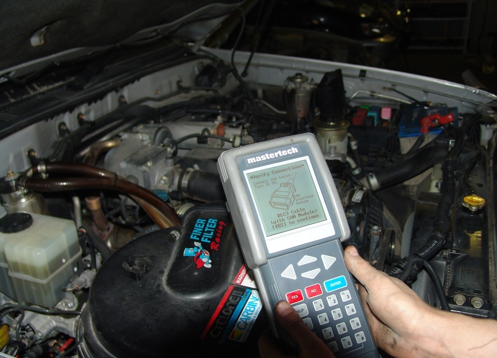

Виды диагностики
1 Этот метод не требует определённого оборудования, так как позволяет по внешним признакам определить всю работу автомобиля по стандартным показателям. Владелец автомобиля может провести диагностику, как во время работы машины, так и на предназначенном для этого стенде. Особое внимание обращают на наличие посторонних шумов, вибрацию, оттенки выхлопных газов, состояние фильтров, электропроводки, видимых узлов и агрегатов. Подобный вид проверки машины применяется как при общем анализе автомобиля, так и при оценке его отдельных узлов.
2. Второй вид диагностики – это по параметрам, которые сопутствуют во время работы. Зачастую это дает более точную картину. Тепловой метод – позволяет определить количество тепла, которое выходит в процессе сгорания или трения, зачастую применяется для проверки двигателя, трансмиссии или подшипников в разных узлах. Оценивается герметичность объектов – зачастую определяю по избыточному давлению или его падению во время работы машины. Такой способ проверки применяется для трансмиссионных узлов, цилиндропоршневой группы и пневмоприводных агрегатов. Анализ отработанных материалов – применяется для оценки амортизации вкладышей шатуна или коренных подшипников.
3. В третий вид диагностики автомобиля входит самый распространенный метод, фундаментом которого является мониторинг геометрических параметров, таких как люфт рулевого колеса, свободный ход, стуки и шумы в кривошипно-шатунном механизме двигателя.Когда речь заходит о диагностировании автомобиля, то для начала нужно полностью осознать, что данная процедура требует определенного количества затрата времени. Ведь за короткий промежуток времени проблему не выявить. Несмотря на конечный итог, при котором может выясниться, что неисправность была минимальная и незначительная, диагностирование будет проходить не меньше получаса. Нужно для начала прочитать коды, затем их стереть, завести и заново прочитать. Потом производится расшифровка кодов, и распечатка диагностической карты.
Необходимо сразу запомнить, что настоящий специалист не будет ограничивать себя только чтением ошибки и рекомендациями по замене различных механизмов, он также проведет целый ряд комплексных действий по проверке правильности расшифровки показаний - электронного блока управлений. Часто причиной неисправности автомобиля или его отдельного агрегата, о которой сигнализирует приборная доска, бывает присущая некоторым автослесарям невнимательность и поспешность, в результате чего некоторые нужные датчики просто не возвращаются на свое место в блок управления.